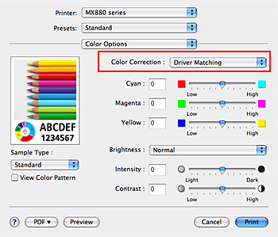

The procedure for specifying color correction is as follows:
If you are using Mac OS X v.10.6.x or Mac OS X v.10.5.x
When you want to print by using the color space (Adobe RGB or sRGB) of the image data effectively or by specifying a printing ICC profile from your application software, select ColorSync. When you want to print by having the printer driver correct the colors, select Canon Color Matching (Vendor Matching).
-
Select Color Matching from the pop-up menu of the Print Dialog

-
Select color correction
Select the item below that matches your purpose.
- ColorSync
-
Perform color correction using ColorSync.
- Canon Color Matching (Vendor Matching)
-
With Canon Digital Photo Color, you can print sRGB data with color tints that most people prefer.
-
Complete the setup
Click Print.
When you execute print, the document data is printed with the specified color correction.
 Important
Important
-
Depending on the application software, when a printing ICC profile is specified from that application software, Canon Color Matching (Vendor Matching) cannot be selected because ColorSync is selected automatically.
-
The Quality & Media setting is necessary even when ColorSync or Canon Color Matching (Vendor Matching) is selected.
If you are using Mac OS X v.10.4.11
When you want to print by using the color space (Adobe RGB or sRGB) of the image data effectively, select ColorSync. If you want to use an application software to specify a printing ICC profile, select None.
-
Select Color Options from the pop-up menu of the Print Dialog
-
Select color correction
From the Color Correction menu, select the item below that matches your purpose.
- Driver Matching
-
By using Canon Digital Photo Color, you can print sRGB data with color tints that most people prefer.
- ColorSync
-
Perform color correction using ColorSync.
- None
-
The printer driver does not perform color correction. Select this value when you are specifying an individually created ICC profile or an ICC profile for special Canon paper in an application software to print data.
-
Complete the setup
Click Print.
When you execute print, the document data is printed with the specified color correction.
Important
-
Quality & Media must also be set even when ColorSync or None is selected for Color Correction.